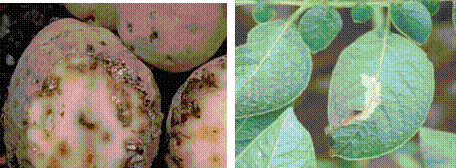

TUBER VEGETABLES :: MAJOR PESTS :: POTATO TUBER MOTH
1. Potato tuber moth: Phthorimaea operculella (Gelechiidae: Lepidoptera)
Distribution and status
World wide. It is the most destructive pest of potato. It is a cosmopolitan pest, found in warmer countries.
Host range: Tomato, tobacco, brinjal, potato, sugarbeet and solanaceous weeds.
Damage symptoms
|  |
Pest of field and storage. Larva tunnels into foliage stem and tubers which lead to loss of leaf tissue, death of growing points and weakening or breaking of stems. In tubers, irregular shaped galleries are seen with excrements near tuber eyes.
Bionomics
Adults are nocturnal in habit. With the onset of winter, moths fly from godowns to fields and lay eggs singly, near eyes of exposed tubers and on ventral surface of leaves. A single female lays 150 to 250 eggs. Eggs are minute, oval and yellowish in colour. Full-grown caterpillars are pinkish-white to pale greenish in colour. Pupation takes place in rough silken cocoons. Adults are small moths with silvery body. Fore wing is greyish-brown with minute dark spots and fringes of hairs. Hind wings are dirty white. Egg, larval and pupal periods last for 3 to 4, 7 to 14 days respectively with at least 5 to 7 generations in a year.
ETL: 5% leaf damage
 |
 |
 |
Phthorimaea operculella |
Phthorimaea operculella |
Phthorimaea operculella |
 |
Phthorimaea operculella |
IPM
* Select healthy tubers and avoid shallow planting of tubers and plant them to a depth of 10-15 cm deep
* Adopt inter-cropping with chillies, onion or pea
* Earthing-up at 60 days after planting to avoid female moths egg laying on the exposed tubers
* Install pheromone traps in the field @ 20/ha
* Remove and destroy infested tubers
* Release egg-larval parasitoid, Chelonus blackburni@ 30, 000 adults/ha twice, 40 and 70 days after planting
* Store only good and clean tuber in well-ventilated, cool, dry place with temperature not exceeding 21ºC. Cold storage is highly preferable.
* Keep pheromone traps in godowns also and destroy trapped moths.
* Fumigate godowns in airtight condition with carbon disulphide (CS2) or a mixture of carbon disulphide and carbon tetrachloride or with Ecofume.
* In godowns, cover the upper surface of potato leaves with Lantana or Eupatorium branches to repel oviposting moths.
* Spray NSKE 5% or quinalphos 25 EC 1.0 L in 500 L of water per ha to manage foliar damage